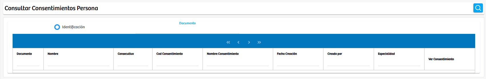

Modulos Sas-Web
Funcionalidades
Consultar Consentimientos
Este módulo corresponde a la documentacion y busqueda de informacion sobre los consentimientos que tiene cada usuario en la plataforma SASWEB. Es una vista donde podemos averiguar cuales son los consentimientos ya relacionados y existentes por un paciente. Aqui encontraremos informacion como: Documento, nombre, consecutivo, Consentimiento, fecha de creacion, creador y especialidad agrupada en una tabla y junto a cada registro tenemos el boton de "Ver Consentimiento" para detallarlo si asi se desea.
